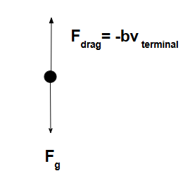

Drag force is the resistive force experienced by objects moving through a fluid such as air or water. It's essential for understanding motion with resistance, especially at high speeds or in fluid environments.
Drag force increases with velocity. At low speeds, linear drag dominates. At high speeds, like skydiving or car racing, quadratic drag becomes significant. When drag balances out the force of gravity, objects reach terminal velocity. In some circumstances, such as deploying a parachute, your drag force can exceed the gravitational force until it reaches its terminal velocity.
Adjust the drag coefficient and type to observe how an object falls with drag applied.